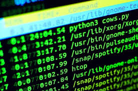

Comandos básicos
Algunos comandos básicos útiles en la terminal son:
cd: Cambia de directorio.
mkdir: Crea una carpeta.
cp: Copia archivos o carpetas de un lugar a otro.
mv: Sirve para mover archivos a otro directorio o para cambiar el nombre de un archivo
ls: Lista los archivos y carpetas en el directorio actual.
rm: Elimina archivos o carpetas del sistema.
touch: Crea un archivo vacío.
nano: Editor de texto en la terminal.
cat: Muestra el contenido de un archivo en la terminal.
clear: Limpia la pantalla de la terminal.